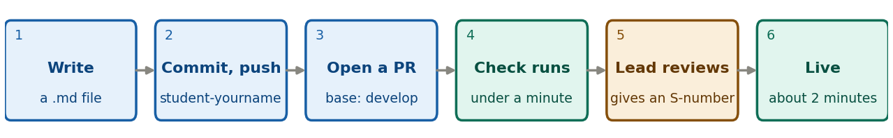

A one-page reminder. The full steps are in guide 3, writing a note and guide 4, publishing a note. Nothing is public until your lead merges your pull request (PR).

Blue: you. Teal: GitHub, automatically. Amber: your lead. A PR is a page on GitHub that asks to add your branch to the project.
Before you push
notes/src/your-note-name.md, your pictures
are in notes/src/img/, the header is complete, and it says
id: "TBD".develop, master or COMMIT.
Remove the template’s img/example.png line, and any
<u>, <sup>,
<sub> or <span> tags.python tools/build_notes.py check. It finds the problems
the PR check would.Commands, from the NSDF-Data folder, on
your own branch:
git checkout student-yourname
git add notes/src/your-note-name.md notes/src/img
git status # only your note and its pictures? no .bin files, no idx folder?
git commit -m "Add note: your title"
git push -u origin student-yournameThen open the repository on github.com, click Compare &
pull request, check that the base is
develop, and click Create pull
request.
If the check says… (click Details on the check to read it)
| Message | What to do |
|---|---|
header field 'X' is missing or empty |
Fill in that line of the header. |
status must be one of ... |
Use exactly In progress, Complete or Outdated. |
notebook link pinned to 'master', or
placeholder COMMIT is still in the note |
Use the real commit hash. |
raw HTML tag <u> (or <sup>,
<sub>, <span>) |
Remove the formatting, keep the words. |
picture not found |
Check the file name, and that it is in
notes/src/img/. |
Fix it on your branch, commit and push again. The PR updates itself and the check runs again.
After that. Your lead reads the note, may comment on
the PR (answer there), and gives it an S-number when it is ready. About
two minutes after the merge your page is live, in the Student
notes table on the front page. To change a published note,
first run
git switch student-yourname && git pull origin develop
and check that the header still has your S-number (not
TBD); then commit, push and open a new PR, update the date,
and never delete a note to hide a mistake.
Never work on master or
develop, or commit data (.bin files, the
idx folder) or other people’s notes. Stuck? Write to
Anthony Villano, anthony.villano@ucdenver.edu, with the PR number, the
check’s message and the step you are on.